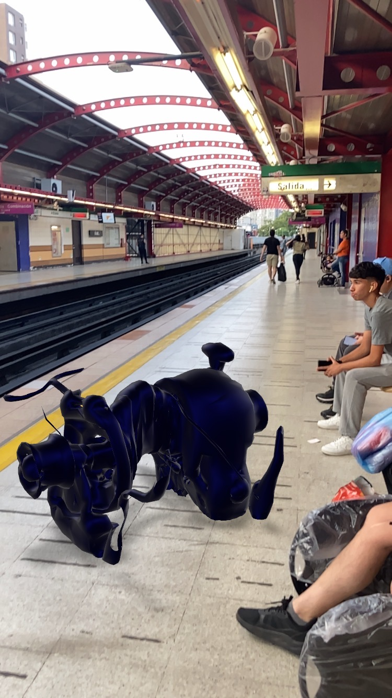
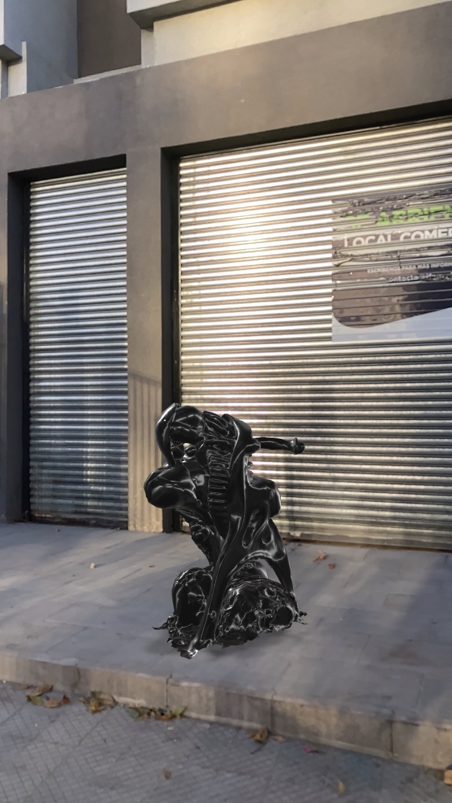
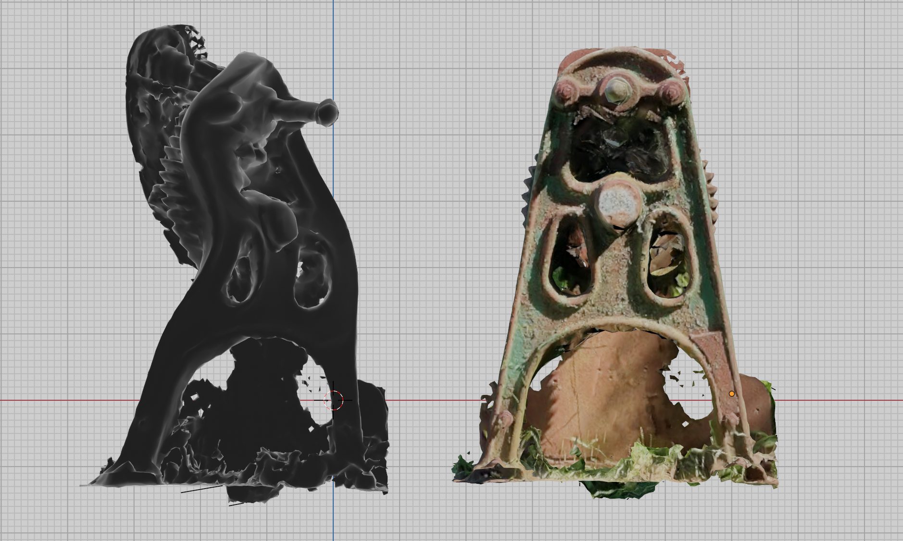
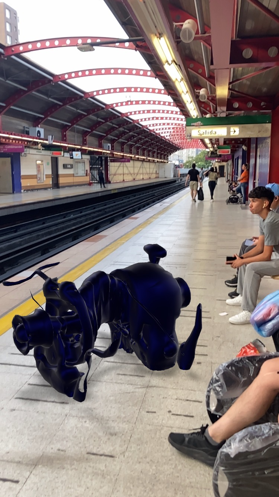
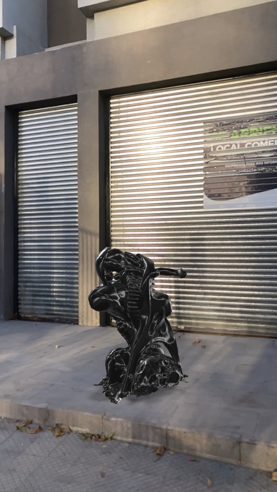
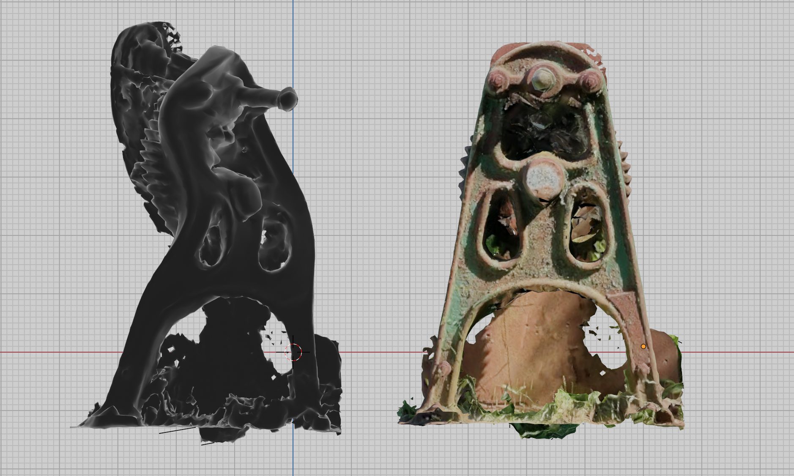

ESPECTRO DERIVAS
2023
 





Habitamos un mundo en constante cambio, donde los lugares de trabajo y la cotidianidad laboral han experimentado transformaciones profundas.
Este proyecto se basa en la digitalización de ruinas industriales, lugares que una vez fueron el epicentro de la cotidianidad laboral.
Hoy, cerca de un 70% de los trabajos en Chile pertenecen al sector de servicios al cliente, donde la espacialidad laboral ha sido despojada de lugares establecidos transformándose drásticamente.
A través de la realidad aumentada, se pretende transformar lo registrado en criaturas tecnológicas.
El proyecto hace una invitación a reflexionar sobre cómo el pasado, el presente y el futuro se entrelazan en un mundo en constante cambio.
Como base, las transformaciones en nuestra sociedad, la naturaleza efímera de la tecnología y la capacidad de las ficciones para dar forma a imaginarios de futuros posibles.
DETALLES
| Año | 2023 |
| Materialidad | Fotogrametría, nube de puntos |
| Formato | Realidad aumentada, repositorio web |
REPOSITORIO EXPANDIDO
Este proyecto ha sido reseñado en el ensayo “Criaturas evanescentes”, publicado en Poesía y Capitalismo.
La obra se extiende más allá de su forma expositiva, activando exploraciones digitales en tiempo real y levantamientos tridimensionales que reconfiguran la memoria industrial como organismo virtual.